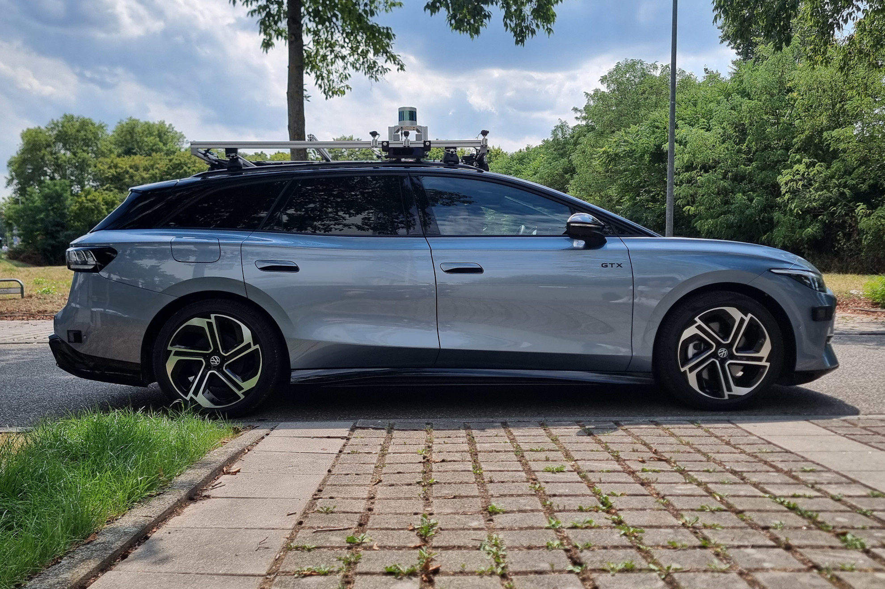
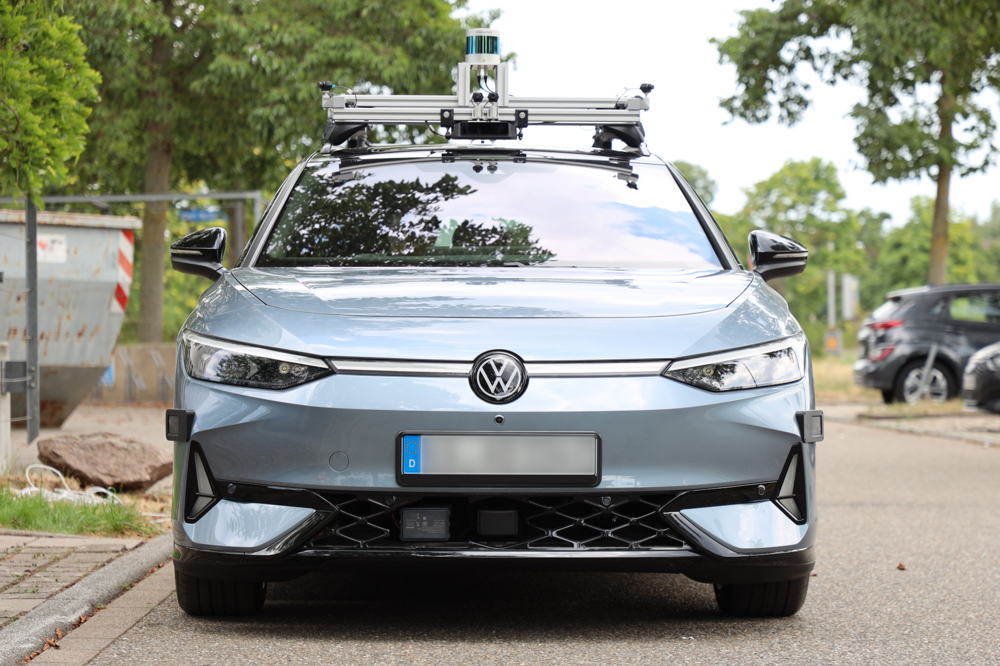
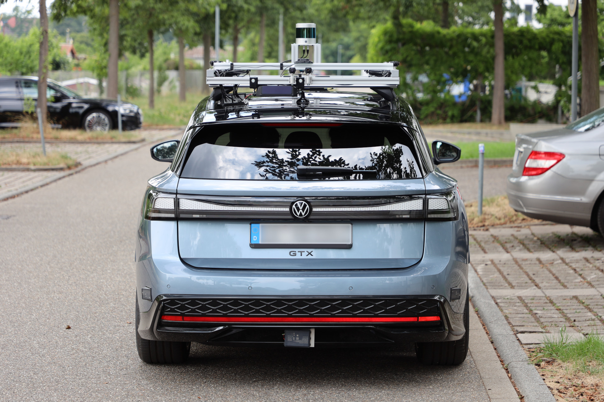
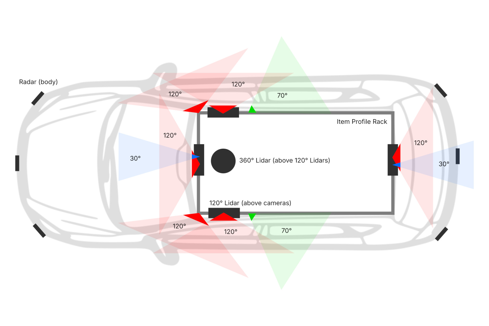
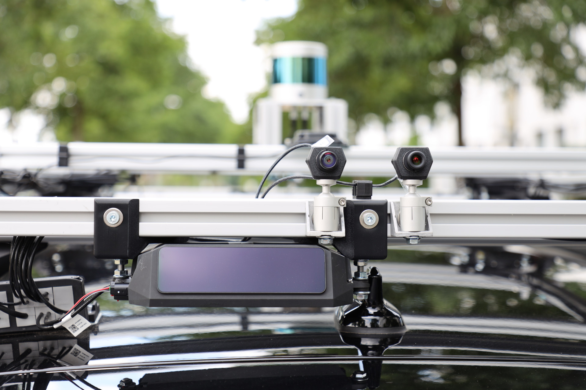
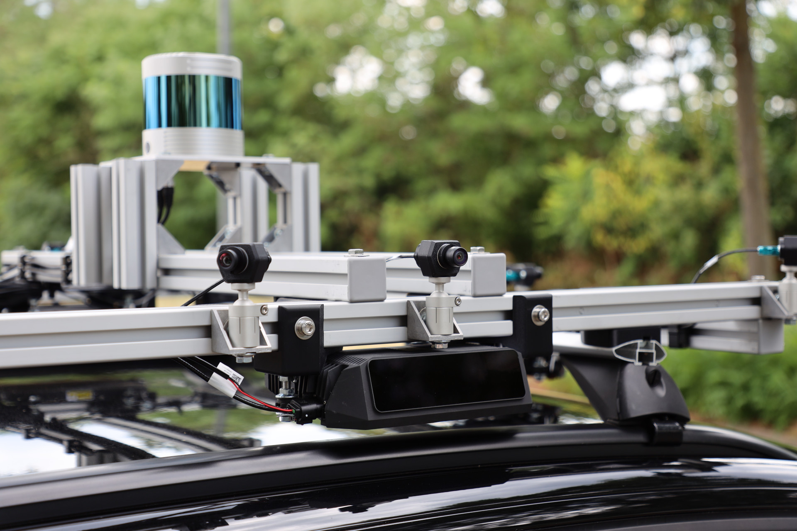
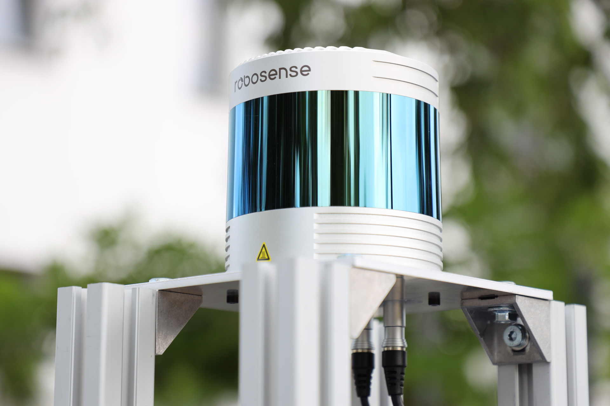
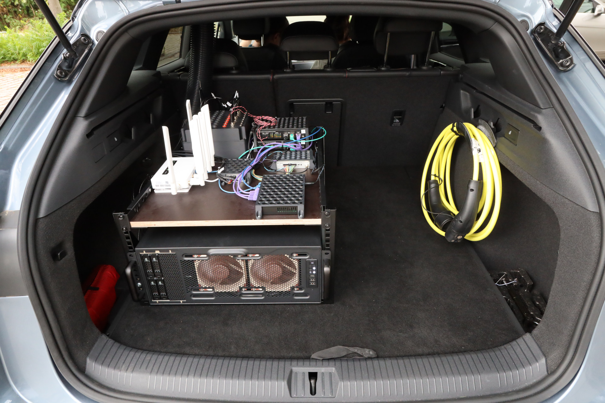

News · July 17, 2026
It’s Getting Real
TÜBINGEN – July 17, 2026
Full self-driving is still unsolved. We have been working on this problem for more than fifteen years, and for the last decade most of that work has happened in simulation. Today that changes: our research vehicle arrived, and we can start testing our ideas where they actually have to hold, in the physical world.
From a station wagon in Karlsruhe to the CARLA leaderboard
In 2012, we equipped a station wagon in Karlsruhe with cameras, a laser scanner and a GPS/IMU unit, and drove around the city to record what became famously known as the KITTI dataset[1][2]. At the time, computer vision datasets were mostly assembled by downloading and annotating images from the internet. That practice does not model what a vision system actually sees when it operates on a physical platform, so we built the platform and collected the data ourselves. Inspired by the PASCAL VOC challenges, we set up an online evaluation server which allowed the community to compare methods systematically and fairly on real data. KITTI became the standard benchmark for stereo, optical flow, scene flow and visual odometry as well as many tasks which have been added over the years, contributed by the research community itself. Its successor KITTI-360[3] added richer modalities and dense semantic annotations. Today these benchmarks are used by more than 100,000 researchers worldwide.
KITTI evaluates perception modules on static data. Driving, however, is a closed loop: a policy acts, the world responds, and the next observation depends on what the policy just did. We were among the first groups to anticipate the shift from modular AV 1.0 stacks, in which perception, prediction and planning are typically considered separate components, to end-to-end AV 2.0 stacks that are trained as a whole on a single loss function. Our end-to-end work started in 2018 with Conditional Affordance Learning[4], which mapped video directly to a small set of driving-relevant quantities instead of a full scene reconstruction. TransFuser[5] fused camera and LiDAR with transformers, and most recently LEAD[6] removed the target point shortcut that had quietly inflated results across the field. Our works continuously pushed the CARLA, NAVSIM and nuPlan leaderboard scores.
All of this, though, happened in simulation, mostly in CARLA[7]. Simulation is what made closed-loop evaluation affordable and reproducible, and we have pushed those benchmarks about as far as they go. However, what a simulation cannot tell us is whether a policy really survives contact with the chaotic and messy real world.
Getting real again
At KE:SAI we have the unique opportunity to take these advances back to the physical world and test which ideas transfer, scale and generalize - and which do not. Today has been an exciting day for us: We received our first research vehicle, a VW ID.7 custom built for us by SafeAD, who equipped it with a rich sensor suite, the power system and a powerful onboard computer.

For now, the car can only perceive. It records, but it does not yet steer: the gateway that lets a policy send control signals to the actuators will be installed later this summer, and the certification that allows us to drive autonomously on public roads (with a safety driver behind the wheel) is expected to be granted by the end of the year. Until then we drive our vehicle manually to collect data as well as on private roads once the gateway is installed.


What is on the car
We have deliberately overequipped the vehicle. A production car would not carry this many sensors. However, we want to develop and test world models and policies that generalize across embodiments, and we want to measure what each sensor actually contributes rather than assume it. With the full set onboard we can ablate any subset in post-processing, on the same drive. Here is an overview of the installed sensor suite:
| Sensor | Type | Qty | Mounting |
|---|---|---|---|
| Seyond Falcon | LiDAR, 120°, 500 m | 4 | Roof |
| RoboSense Ruby Plus | LiDAR, 360°, 250 m | 1 | Roof |
| Aumovio FSC300 120° camera | Camera, 120°, 4K, heated lens | 6 | Roof |
| Aumovio FSC300 70° camera | Camera, 70°, 4K, heated lens | 2 | Roof |
| Aumovio FSC300 30° camera | Camera, 30°, 4K, heated lens | 2 | Roof |
| Aumovio SRR 630 | Radar, 150°, 200 m | 4 | Body |
| Aumovio ARS 540 | Radar, 120°, 300 m | 2 | Body |
| u-blox ZED-X20P | GNSS, RTK, all-band | 1 | Roof & trunk |
| InertialSense IMX-5 | IMU, tactical grade | 1 | Trunk |

Our cameras sit on ball joints so they can be aimed precisely. The long-range LiDARs use a fine adjustment mechanism for the same reason. All cameras are triggered synchronously, and every measurement is timestamped against the main clock, which is itself synchronized to GPS time. From KITTI we know that getting this right matters: a policy trained on data whose sensors disagree about when something happened is learning partly from noise.



The raw sensor data that is recorded at 20 frames per second is enormous: Without compression, 1 hour of recording requires about 5 TB of storage. Our trunk hence houses a professional workstation-class machine in a 19″ rack: an AMD Threadripper PRO with an NVIDIA RTX PRO 6000 Blackwell, 128 GB of ECC memory and 60 TB of hot-swappable NVMe storage, fed by automotive Ethernet switches and frame grabbers. Our system runs Linux and publishes and records everything through ROS 2 via a software and drivers provided by SafeAD. A separate power system with its own buffer battery keeps the computer alive when the ignition is off.

Data
One car in Tübingen will not produce the scale or diversity that training modern driving policies requires. We will use our vehicle for local testing and small-scale, targeted data collection. For scale and diversity we rely on our network of partners. In particular, we integrate all sources of data into py123D[8], our open-source framework for unifying multi-modal driving data. It already consolidates eight real-world datasets spanning 3,300 hours and 90,000 kilometers behind a single API, and our own recordings as well as other data supplied by our partners will simply become additional sources in it.
All data we collect is anonymized directly after recording. Faces and license plates are removed, and the data is stored in anonymized form for research purposes. We release as much of this data as possible to the community.
What comes next
We expect to deploy our first policies onto the car before the end of the year, starting on private roads first and moving to public roads once our vehicle is fully certified. In the spirit of the KE:SAI open science lab, we will make everything public: the data, the models, the weights, the test results, and the hardware specifications of the vehicle.
The physical world does not care about leaderboards. It will surface failure modes that no simulator has shown us, and it will do so in the least convenient way possible. After a decade in simulation, we are looking forward to facing the real thing again, and we will report what we find, including the parts that do not work.
References
- A. Geiger, P. Lenz, R. Urtasun. “Are We Ready for Autonomous Driving? The KITTI Vision Benchmark Suite.” CVPR, 2012.
- A. Geiger, P. Lenz, C. Stiller, R. Urtasun. “Vision meets Robotics: The KITTI Dataset.” International Journal of Robotics Research, 2013.
- Y. Liao, J. Xie, A. Geiger. “KITTI-360: A Novel Dataset and Benchmarks for Urban Scene Understanding in 2D and 3D.” PAMI, arXiv:2109.13410, 2022.
- A. Sauer, N. Savinov, A. Geiger. “Conditional Affordance Learning for Driving in Urban Environments.” CoRL, arXiv:1806.06498, 2018.
- K. Chitta, A. Prakash, B. Jaeger, Z. Yu, K. Renz, A. Geiger. “TransFuser: Imitation with Transformer-Based Sensor Fusion for Autonomous Driving.” PAMI, arXiv:2205.15997, 2023.
- L. Nguyen, M. Fauth, B. Jaeger, D. Dauner, M. Igl, A. Geiger, K. Chitta. “LEAD: Minimizing Learner-Expert Asymmetry in End-to-End Driving.” CVPR, 2026.
- A. Dosovitskiy, G. Ros, F. Codevilla, A. Lopez, V. Koltun. “CARLA: An Open Urban Driving Simulator.” CoRL, arXiv:1711.03938, 2017.
- D. Dauner, V. Charraut, B. Berle, T. Li, L. Nguyen, J. Wang, C. Jing, M. Igl, H. Caesar, B. Ivanovic, Y. Liao, A. Geiger, K. Chitta. “123D: Unifying Multi-Modal Autonomous Driving Data at Scale.” arXiv:2605.08084, 2026.